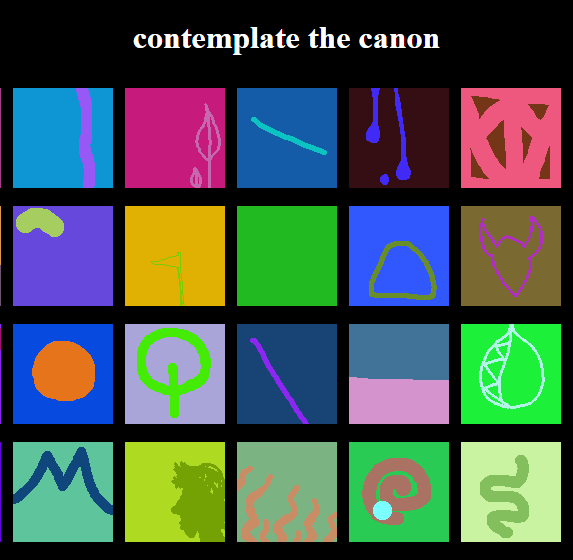
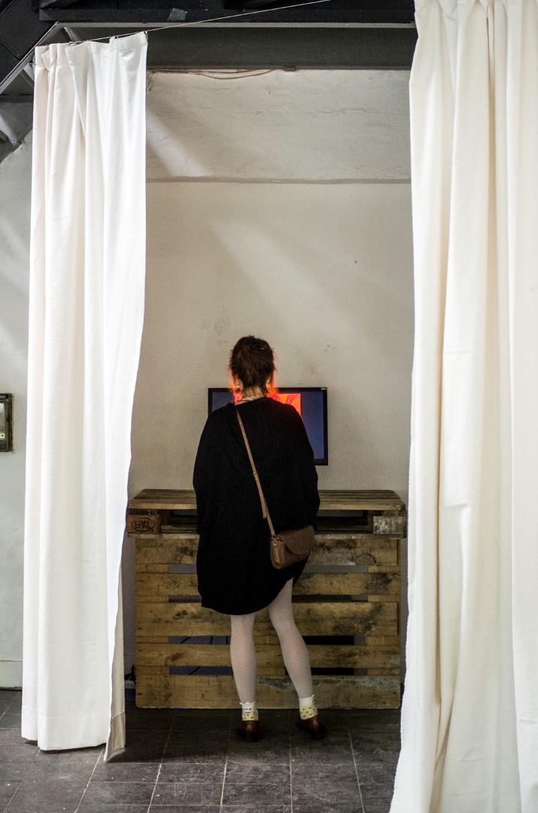

faithgame
January 31, 2016
By Sergio Cornaga, Matthew Gatland and Ellie Hayward. Based on flickgame by Stephen Lavelle.

Perform the ritual or contemplate the canon
Faithgame is a game-making ritual. By following strict constraints, our games become closer to perfection – as do we.
We started by taking the source code from the brilliant but unorthodox game making tool flickgame. We purified the tool, for example by correcting its irregular aspect ratio to a perfect square.
We soon divined that a perfect game has 10 pages, is created in silence, and is published in secret. We continued to modify the tool to help users perform the game-making ritual canonically.
Faithgame was exhibited at tinypalace, an alternative games festival in Kassel, Germany.

More resources:
- Faithgame on the Global Game Jam website
- Faithgame source code (with our semi-performative commit logs)